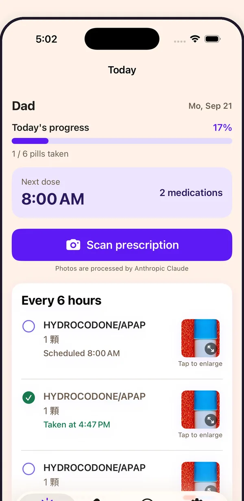
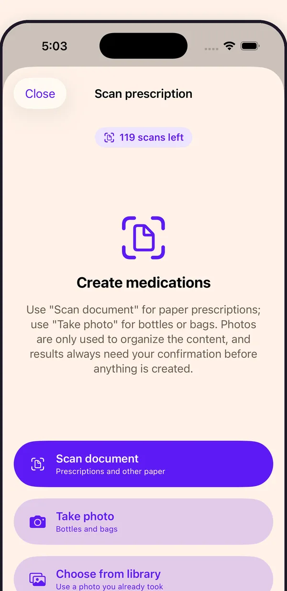
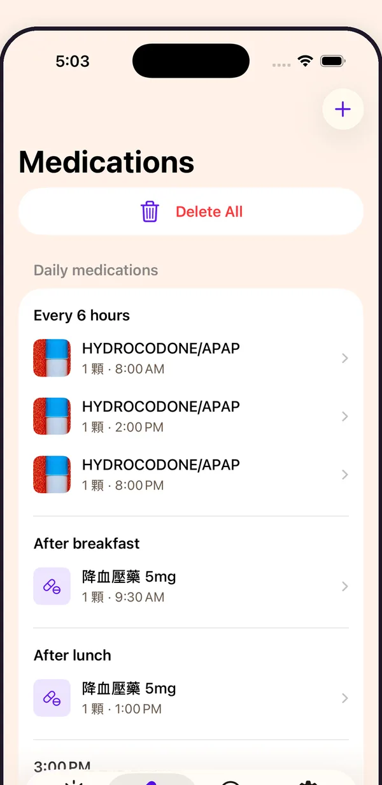
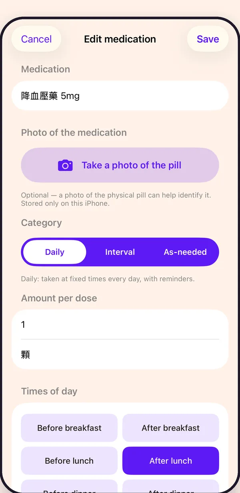
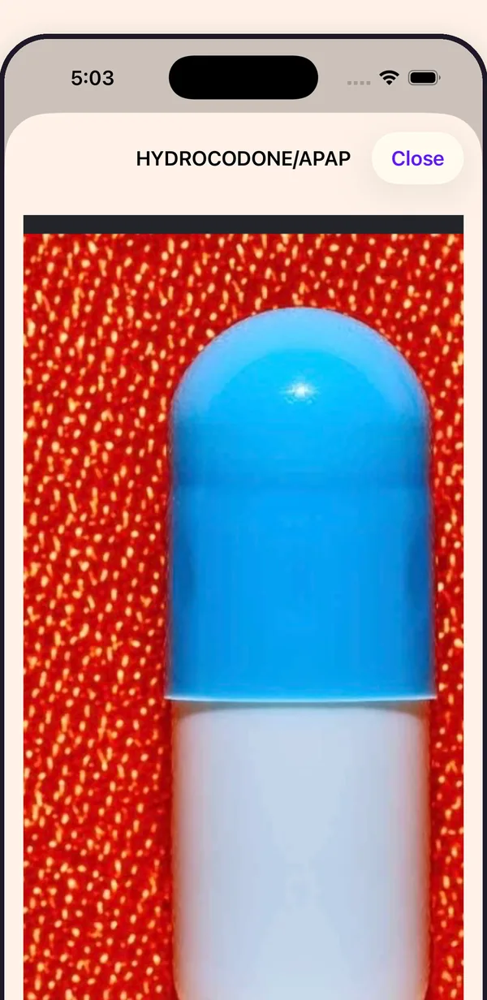

Tentang Ontimo
Ontimo bermula dari ayah saya.
Setiap hari ia minum beberapa macam obat, kemasan resepnya setumpuk, dan waktu minum tiap obat berbeda. Yang paling merepotkan bukan minumnya, melainkan mengingat yang mana dan kapan. Begitu obatnya bertambah banyak, ingatan dan kotak obat tidak lagi mencukupi.
Jadi saya membuat Ontimo.
Cukup foto kemasan resep, label apotek, atau resep kertas, dan Ontimo merapikan nama obat, dosis, serta waktu minumnya.
Setelah diatur, Ontimo mengingatkan saat waktunya tiba dan mencatat yang sudah diminum. Tiap obat juga bisa diberi satu foto, sehingga obat yang mirip lebih sulit tertukar.
Awalnya hanya supaya ayah saya lebih mudah minum obat. Lama-lama saya rasa orang lain yang setiap hari minum banyak obat, atau yang mengurus obat untuk keluarganya, mungkin juga membutuhkannya.
Ontimo, aplikasi pengingat obat yang dibuat di Taiwan.

Fitur
-
Pemindaian label dengan AI
Foto kemasan, botol, atau lembar resep, dan daftar obat tersusun sendiri. Setiap hasil menunggu konfirmasi Anda lebih dulu.
-
Pengingat waktu makan dan interval
Sebelum atau sesudah makan, atau setiap 4, 6, atau 12 jam. Dosis yang mengikuti waktu makan ikut bergeser saat jadwal makan Anda berubah.
-
Riwayat dosis
Lihat kemajuan hari ini sekilas: mana yang sudah diminum, terlewat, atau belum waktunya.
-
Foto obat
Simpan foto setiap obat agar pil yang mirip tidak pernah tertukar.
-
Obat sesuai kebutuhan
Diminum saat perlu, atau atur sendiri hingga empat waktu pengingat.
-
Tiga bahasa
Mandarin Tradisional, Inggris, dan Indonesia, untuk rumah tangga yang perawat dan keluarganya tidak berbahasa sama.
Di dalam aplikasi
-

Pindai resep, kemasan, atau botol -

Semua obat, dikelompokkan menurut jadwal -

Sebelum atau sesudah makan, satu ketukan -

Foto untuk setiap obat, tanpa tertukar
Dapatkan Ontimo
Ontimo tersedia untuk iPhone. Versi Android sedang dikembangkan.